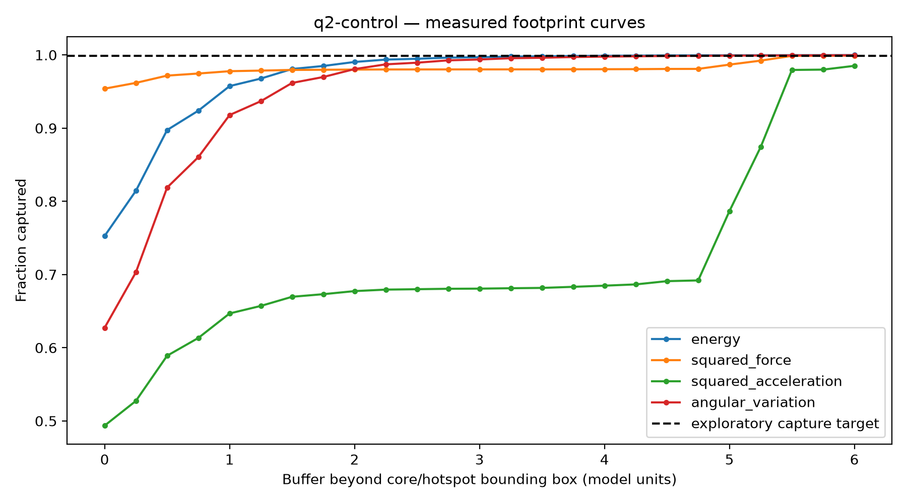
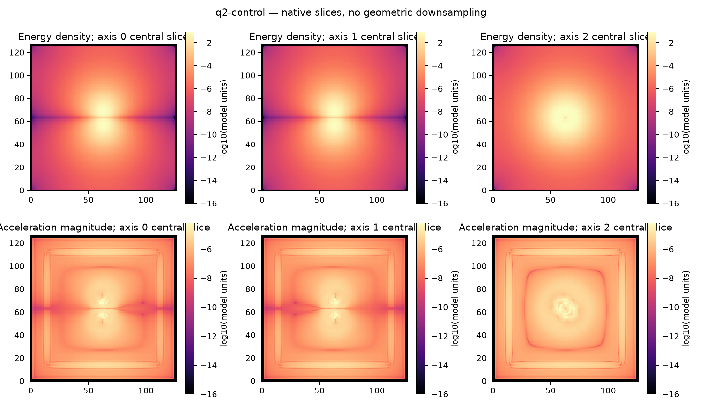
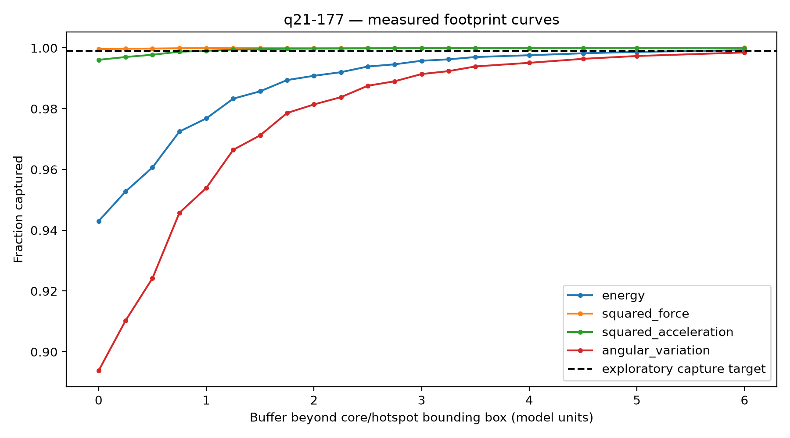
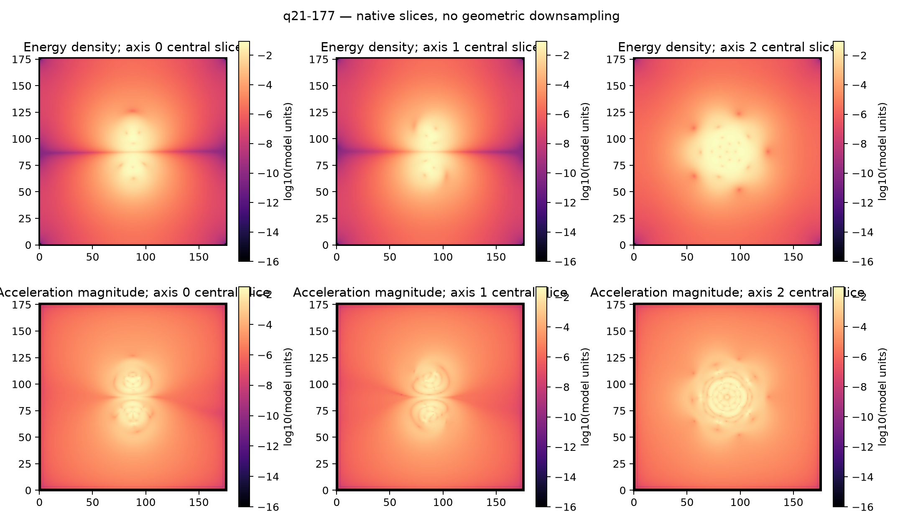
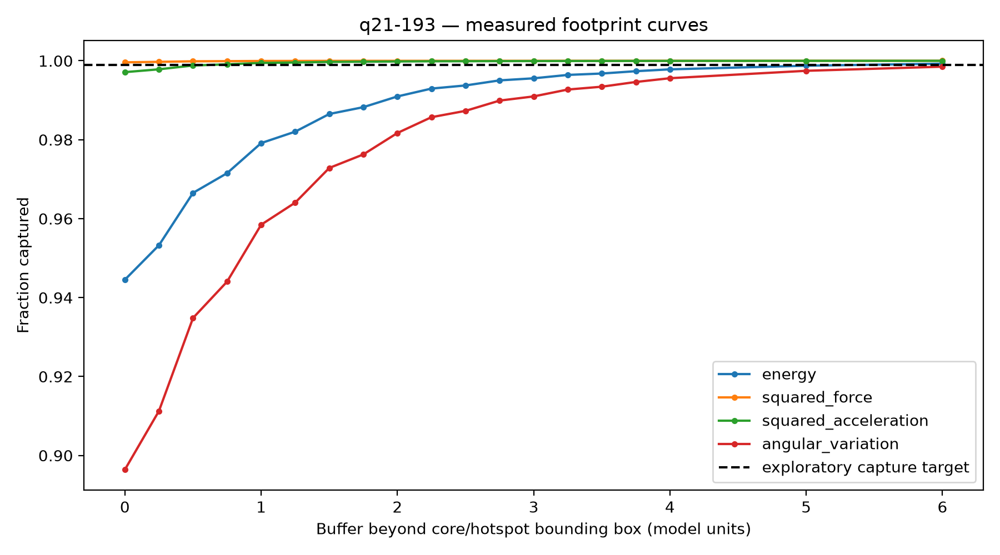
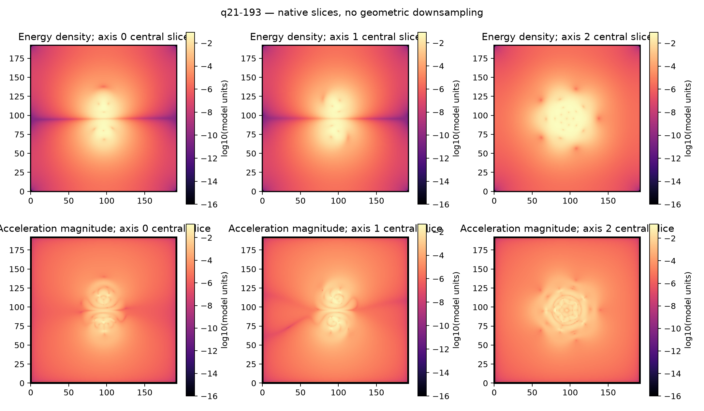
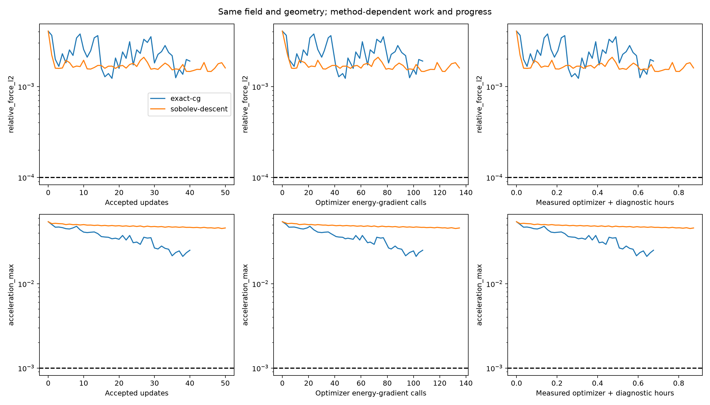

{'utc': '2026-11-24T09:21:06.214894+00:00', 'melbourne': '2026-11-24T20:21:06.214894+11:00'}
Status: complete_pending_review. No physical-time evolution; coupled-grid evolution remains explicitly deferred.
Full record · Measurements · Deferrals






